Narrative Diffusion in the Far-Right Podcast Ecosystem
A computational analysis tracing narrative diffusion through a 113-show podcast ecosystem spanning 1992–2025. Six-phase pipeline from raw transcripts to influence network characterization.
Methodology Overview
The analysis pipeline comprises six phases, each building on the outputs of the previous. The pipeline transforms raw podcast transcripts into a directed influence network with community structure and podcaster classification.
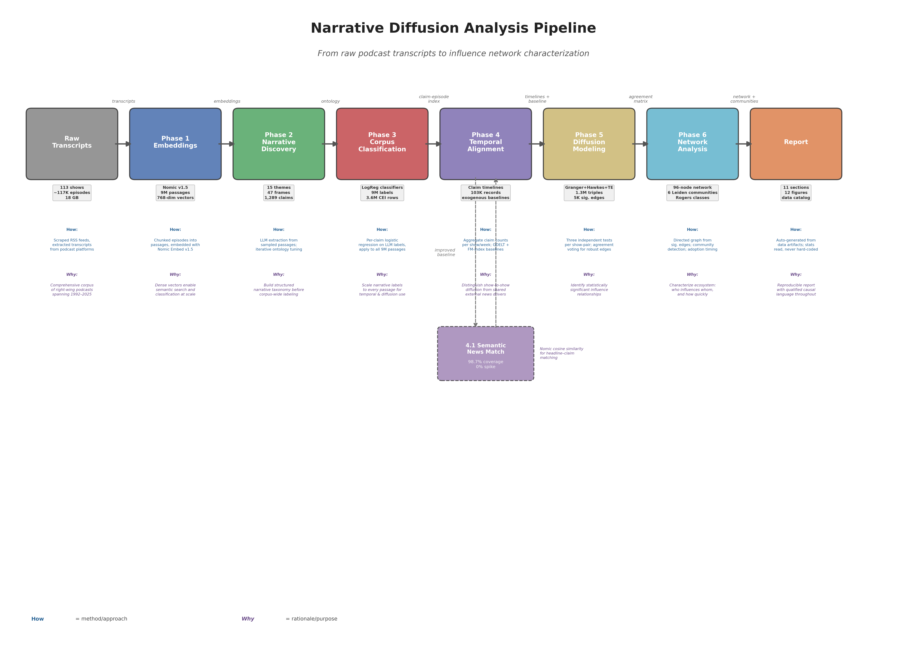
Phase 1: Passage Embeddings
Goal: Transform raw podcast transcripts into dense semantic representations suitable for downstream narrative analysis.
Approach: Episode transcripts were segmented into topically coherent passages using cosine-similarity boundary detection on sentence embeddings, then each passage was encoded to a 768-dimensional vector using Nomic Embed v1.5.
| Parameter | Value |
|---|---|
| Embedding model | nomic-ai/nomic-embed-text-v1.5 |
| Encoding prefix | clustering: |
| Embedding dimension | 768 |
| Chunking method | Cosine-similarity boundary detection |
| Total passages | 9,036,908 |
| Total shows | 113 |
Phase 2: Narrative Discovery
Goal: Construct a hierarchical narrative ontology (themes > frames > claims) capturing the discourse structure of the corpus.
Approach: Three techniques were evaluated — TF-IDF + NMF baseline, BERTopic (HDBSCAN + c-TF-IDF), and LLM-based extraction (Qwen3.5-35B). The LLM approach was selected for superior interpretability.
| Parameter | Value |
|---|---|
| Themes | 15 |
| Frames | 47 |
| Claims | 1,289 |
| Raw LLM frames extracted | 399 → 47 canonical |
Phase 3: Corpus-Scale Classification
Goal: Label every passage in the 9M-passage corpus with relevant narrative frames and themes.
Approach: Per-frame and per-theme Logistic Regression classifiers trained on LLM-labeled passages. Fully deterministic (NMI = 1.0), ~100x faster than LLM approach.
| Parameter | Value |
|---|---|
| Total passages classified | 9,036,908 |
| Frame macro F1 | 0.208 |
| Theme macro F1 | 0.371 |
| Corpus coverage | 99.1% |
Phase 4: Temporal Analysis and Exogenous Baseline
Goal: Construct narrative adoption timelines and assess whether adoption events coincide with exogenous news coverage.
Approach: Claim-level adoption timelines were built from the claim-episode index. An exogenous baseline was constructed using GDELT + FM-index, then upgraded to semantic embedding matching (Phase 4.1) achieving 98.7% claim coverage.
Phase 5: Diffusion Modeling
Goal: Identify statistically significant directional influence relationships between shows.
Approach: Three-method pipeline: Granger causality screening (1.9M tests), bivariate Hawkes process fitting (1.3M triples), and transfer entropy validation. Multi-method agreement ensures robust edges.
| Agreement Level | Edges |
|---|---|
| All 3 methods | 1,364 |
| Hawkes + Granger | 3,635 |
| Granger only | 1,302,768 |
Phase 6: Network Analysis
Goal: Construct the show-level influence network, classify shows on the Rogers diffusion spectrum, detect communities, and quantify cross-cluster flow.
Approach: 2-of-3 method agreement filter, Leiden community detection, Rogers adoption timing classification.
| Metric | Value |
|---|---|
| Network nodes | 96 |
| Directed edges | 1,877 |
| Density | 0.206 |
| Leiden communities | 6 |
| Rogers innovators | 3 |
Phase 1: Passage Embeddings
Phase 1 transforms raw podcast transcripts into dense semantic representations. Each episode transcript is segmented into topically coherent passages using cosine-similarity boundary detection, then encoded to a 768-dimensional embedding vector.
Model Selection
An evaluation compared multiple embedding models on 125,008 passages across 10 shows.
| Model | Dim | Mean Silhouette | Truncation |
|---|---|---|---|
| all-mpnet-base-v2 | 768 | 0.0124 | 0% |
| bge-large-en-v1.5 | 1024 | -0.0061 | 0% |
| nomic-embed-text-v1.5 | 768 | 0.0126 | 0% |
| mxbai-embed-large-v1 | 1024 | -0.0009 | 0% |
Chunking Strategy
Episodes were segmented using cosine-similarity boundary detection on sentence-level embeddings with a 25th percentile threshold. Mean passage length: 11.4 sentences (median 9), with 3.3% hitting min/max constraints.
Corpus Statistics
Top 10 Shows by Passage Count
| Show | Passages | Episodes |
|---|---|---|
| Alex Jones Show | 1,325,602 | 7,766 |
| Joe Rogan Experience | 487,268 | 2,381 |
| Steven Crowder | 437,928 | 7,352 |
| Nick Fuentes | 327,375 | 1,788 |
| Owen Shroyer | 307,426 | 1,993 |
| Daily Kenn | 294,874 | 1,929 |
| Jesse Lee Peterson | 254,677 | 4,179 |
| Ben Shapiro | 245,722 | 4,935 |
| Matt Walsh | 237,772 | 5,340 |
| Tim Pool | 208,809 | 1,394 |
Phase 2: Narrative Discovery
Phase 2 constructs a hierarchical narrative ontology that captures the discourse structure of the far-right podcast ecosystem: 15 themes, 47 frames, and 1,289 claims.
Method Comparison
| Method | NPMI | C_v | Coverage | Hierarchy |
|---|---|---|---|---|
| Vocabulary Baseline (TF-IDF + NMF) | 0.073 | 0.590 | 86.0% | No |
| BERTopic | -0.018 | 0.555 | 37.0% | Yes |
| LLM Extraction (selected) | -0.074 | 0.398 | N/A | Yes |
The LLM approach produced lower gensim coherence scores, which is expected: gensim metrics measure word co-occurrence, not semantic coherence. The LLM approach was selected for interpretability — it produces named narrative frames with falsifiable claims.
Ontology: 15 Themes
| Theme | Frames | Claims |
|---|---|---|
| Media and Tech Control | 2 | 60 |
| Deep State and Shadow Government | 5 | 135 |
| Election and Democratic Legitimacy Crisis | 2 | 60 |
| Pandemic and Medical Conspiracy | 3 | 76 |
| Immigration and Demographic Replacement | 3 | 85 |
| Cultural and Ideological Warfare | 5 | 150 |
| Government Tyranny and Loss of Liberty | 5 | 135 |
| Conspiracy and Historical Revisionism | 6 | 162 |
| Economic and Systemic Collapse | 3 | 90 |
| Foreign Policy and Military Distrust | 4 | 107 |
| Racial and Biological Essentialism | 2 | 43 |
| Survivalism and Apocalyptic Preparedness | 2 | 51 |
| False Flags and Extraterrestrial Threats | 2 | 60 |
| Anti-Establishment and Elite Hostility | 2 | 55 |
| Other Narratives | 1 | 20 |
Phase 3: Corpus-Scale Classification
Phase 3 applies the Phase 2 ontology to all 9,036,908 passages. Per-frame (47) and per-theme (15) Logistic Regression classifiers assign narrative labels to each passage.
Method Comparison
| Method | Macro F1 | 9M-Passage Time | GPU Cost |
|---|---|---|---|
| Pure LLM | 0.229 | ~56 hours | 8x H200 |
| Hybrid (k=10) | 0.238 | ~70 hours | 8x H200 |
| Logistic Regression | 0.208 | ~39 min | CPU only |
| MLP | 0.203 | < 1 sec | 1x GPU |
Corpus Coverage
Phase 4: Temporal Analysis
Phase 4 constructs narrative adoption timelines and assesses whether adoption events coincide with exogenous news coverage. Phase 4.1 upgraded the baseline from exact substring to semantic embedding matching.
Publication Schedules
| Schedule Class | Shows | Percentage |
|---|---|---|
| Daily | 62 | 55% |
| Weekly | 24 | 21% |
| Biweekly | 7 | 6% |
| Irregular | 6 | 5% |
Exogenous Baseline Evolution
| Metric | FM-Index (Phase 4) | Semantic (Phase 4.1) |
|---|---|---|
| Claim coverage | 0.7% | 98.7% |
| Method | Exact substring | Cosine similarity (0.65) |
| Claims with signal | 9 | 77,340 rows |
Phase 5: Diffusion Modeling
Phase 5 identifies statistically significant directional influence relationships using a three-method pipeline: Granger causality, bivariate Hawkes process, and transfer entropy.
Stage 1: Granger Causality Screening
| Metric | Value |
|---|---|
| Directed triples tested | 1,885,006 |
| FDR-0.05 significant | 1,307,767 (69.4%) |
Stage 2: Hawkes Process Fitting
| Metric | Value |
|---|---|
| Triples fitted | 1,307,767 |
| Convergence rate | 82.2% |
| FDR-0.05 significant | 4,999 (0.4%) |
Stage 3: Transfer Entropy Validation
| Metric | Value |
|---|---|
| Edges evaluated | 4,999 |
| TE significant (FDR-0.05) | 1,364 |
| All-3-method agreement | 1,364 |
Regime Shift Detection
Sliding-window Hawkes fitting with PELT changepoint detection identified a structural break near July 2020, with mean aggregate alpha increasing from 0.506 to 0.812 (+60%). This coincides temporally with the COVID-19 pandemic onset.
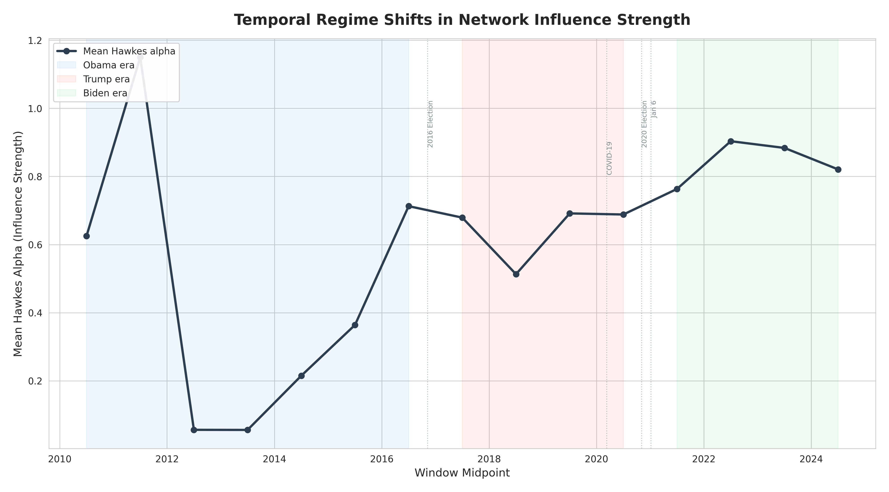
Phase 6: Network Analysis
Phase 6 constructs the show-level influence network, classifies shows on the Rogers diffusion spectrum, detects communities, and quantifies cross-cluster narrative flow.
Influence Network
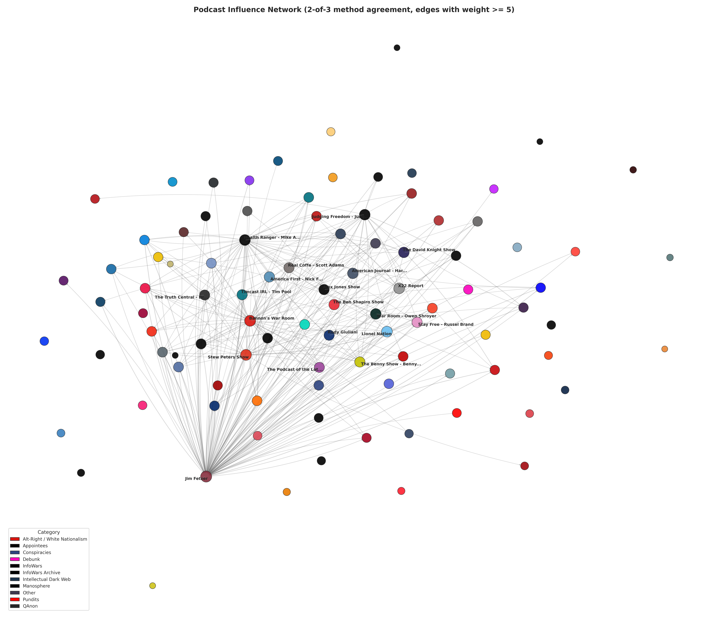
Rogers Diffusion Classification
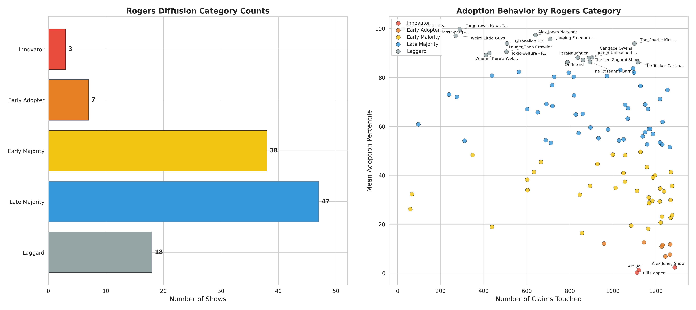
| Rogers Category | Count |
|---|---|
| Innovator | 3 |
| Early Adopter | 7 |
| Early Majority | 38 |
| Late Majority | 47 |
| Laggard | 18 |
Innovators
| Show | Category | Median Adoption Percentile |
|---|---|---|
| Art Bell | Conspiracies | 1.117 |
| Alex Jones Show | InfoWars | 2.174 |
| Bill Cooper | Conspiracies | 0.000 |
Community Structure
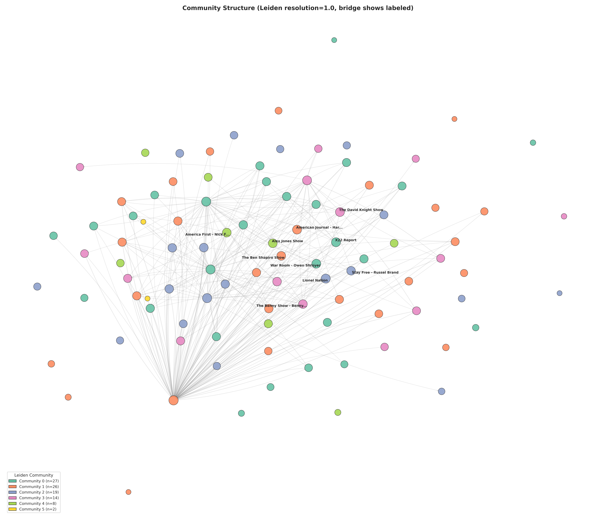
Bridge Shows
| Show | Category | Bridge Score | Cross-Community Frac |
|---|---|---|---|
| War Room - Owen Shroyer | InfoWars | 0.056 | 0.641 |
| American Journal - Harrison Smith | InfoWars | 0.049 | 0.677 |
| Alex Jones Show | InfoWars | 0.035 | 0.853 |
| Stay Free - Russell Brand | Conspiracies | 0.033 | 0.794 |
| X22 Report | QAnon | 0.031 | 0.640 |
Cross-Cluster Flow
Cross-cluster narrative flow significantly exceeds chance for both category-based and Leiden-based clusterings (p = 0.000 against 1,000-permutation configuration model null).
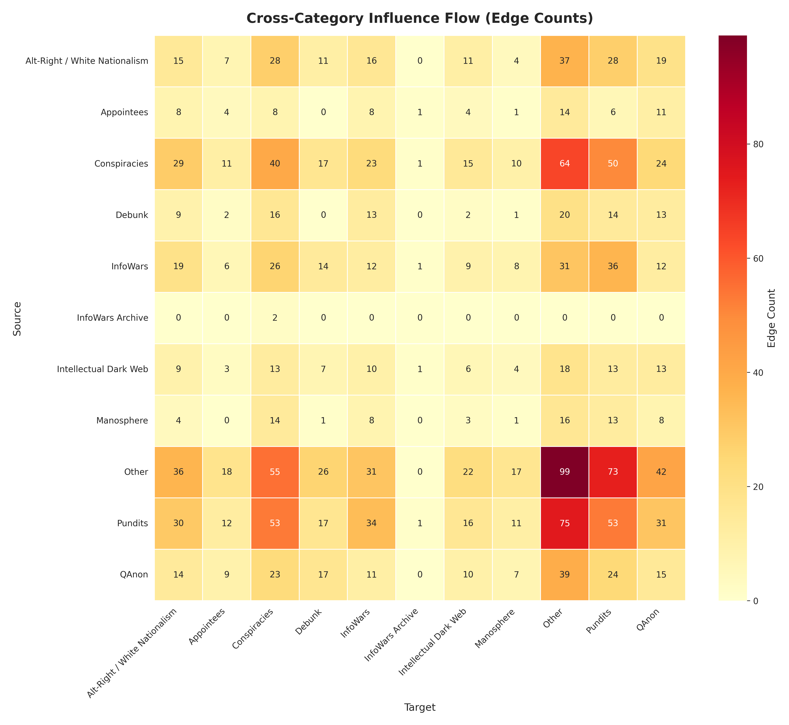
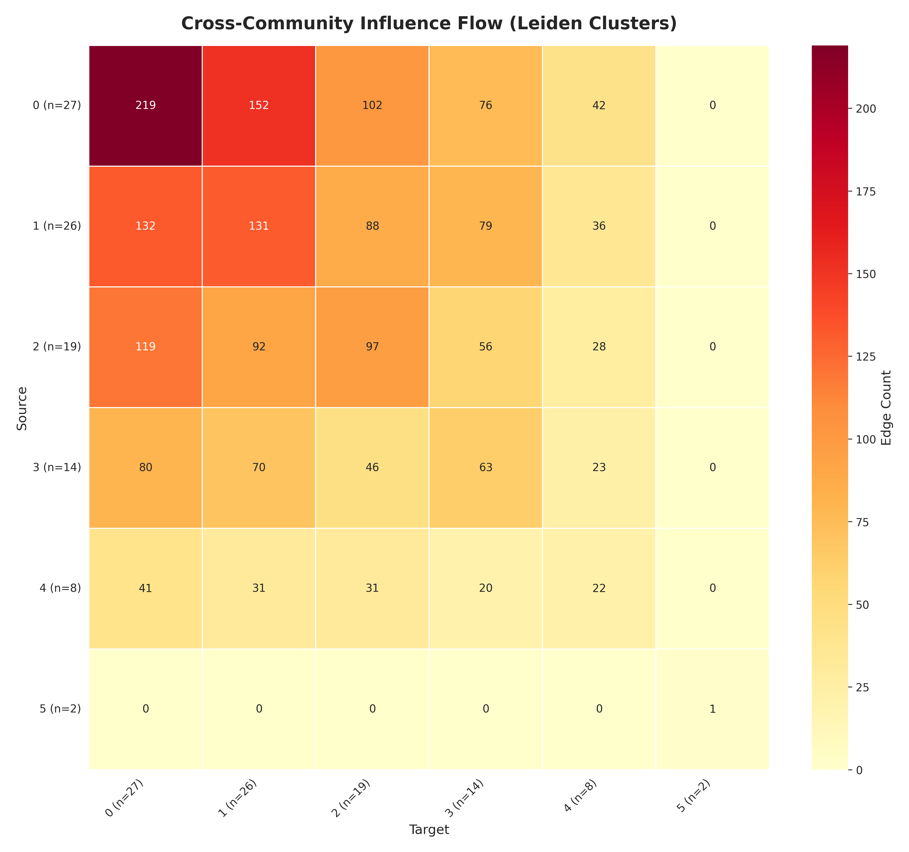
Case Studies
Five mechanically selected case studies illustrate narrative diffusion patterns. Each traces a single claim from its origin show through adoption by the ecosystem.
Selection Criteria
| Criterion | Definition | Top Claim |
|---|---|---|
| Most Widely Adopted | Number of unique adopting shows | C016 (108 shows) |
| Fastest Spreading | Shortest adoption span (≥50 shows) | C840 (2,825 days) |
| Most Cross-Cluster | Significant edges crossing category boundaries | C979 (113 cross-category edges) |
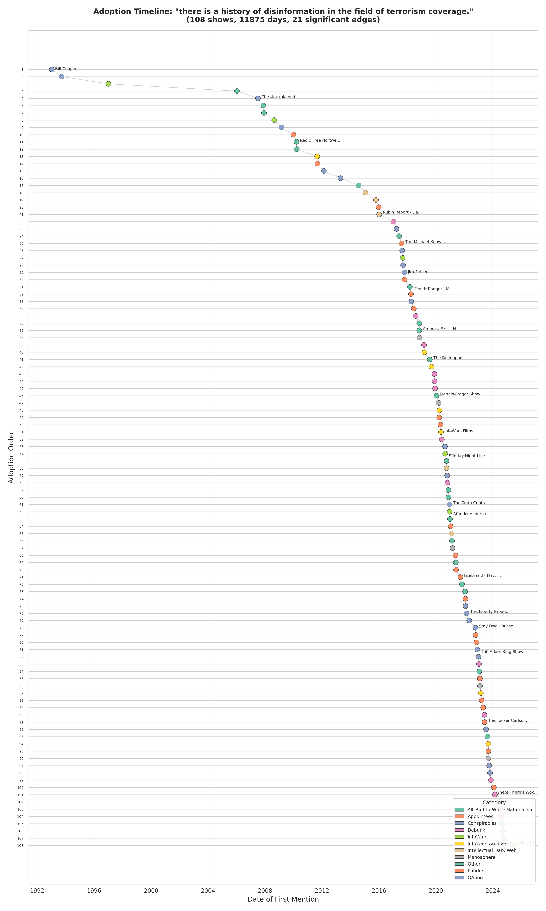
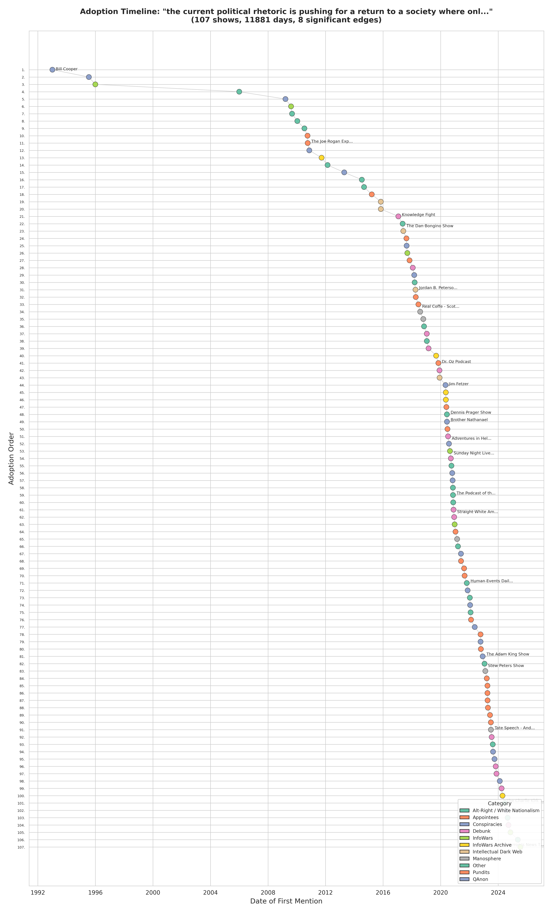
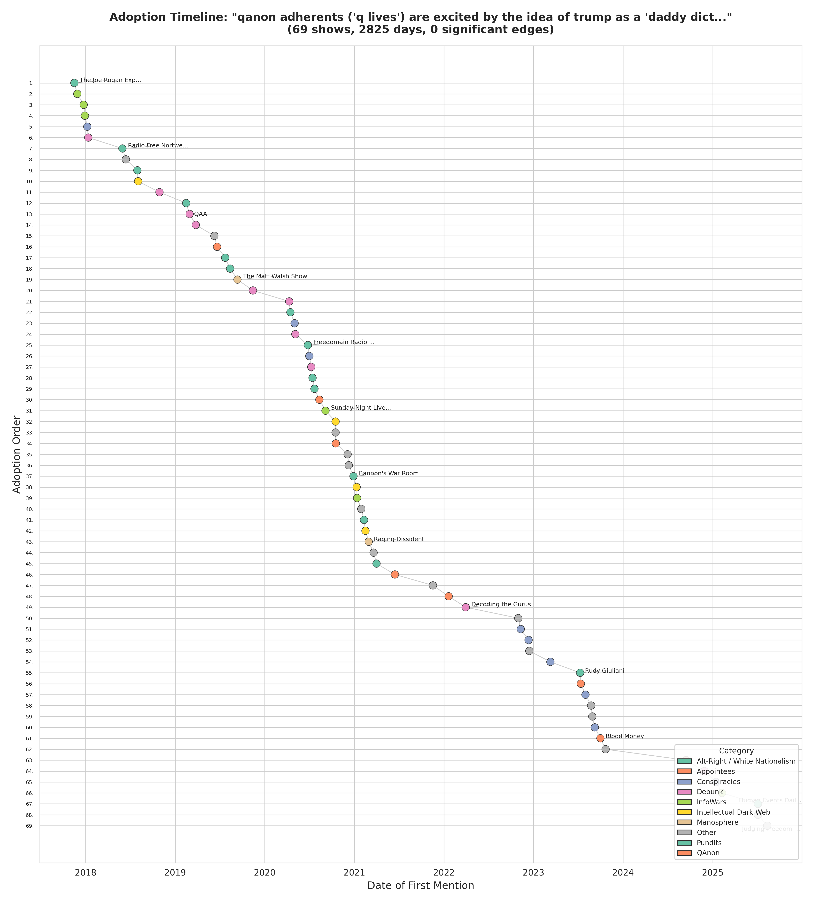
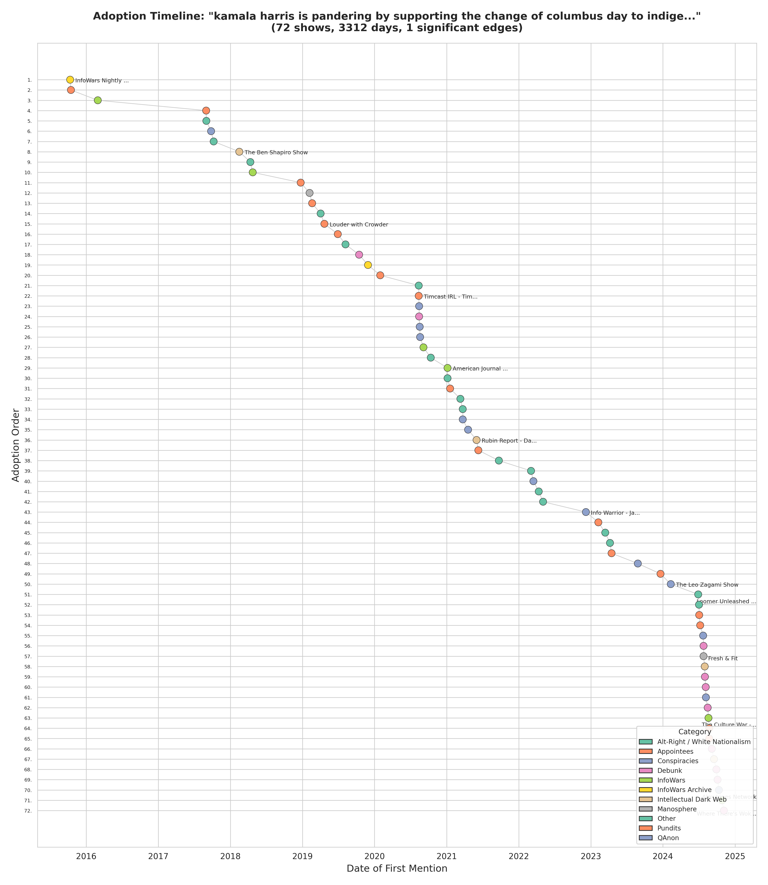
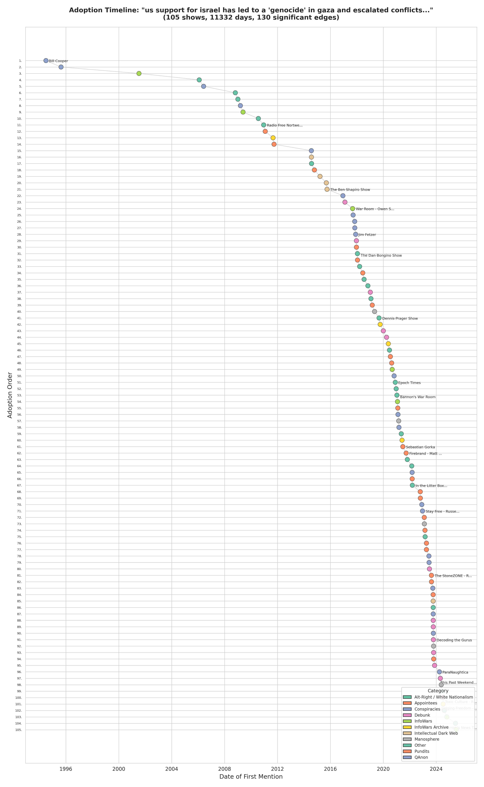
Limitations and Caveats
These limitations constrain the strength of conclusions but do not invalidate findings.
1. Survivorship Bias
The corpus comprises 113 curated shows, not a probability sample. Shows that were deplatformed, discontinued, or never gained visibility may be absent. Prolific shows (Alex Jones: 7,700+ episodes) mechanically appear more connected. The analysis is effectively weighted toward the 2018–2025 period.
2. Open-System Problems
The podcast ecosystem is not closed. Influence from non-podcast sources (Twitter/X, YouTube, Telegram, cable news) cannot be separated from inter-show influence. When two shows adopt the same narrative in sequence, the pattern is consistent with direct influence but could reflect independent responses to shared external stimuli.
3. Temporal Scope
Coverage is highly uneven: the majority of shows and episodes concentrate in 2018–2025. Before 2010, only Bill Cooper, Art Bell, and Alex Jones are present. Publication frequency varies from multiple daily episodes to monthly, creating unequal temporal resolution (uncertainty windows from <1 day to 189 days).
4. Pre-2021 Exogenous Filtering Gaps
FM-index covers 2021–2025 only. GDELT API was inaccessible for 2017–2020. No baseline exists pre-2017. 17.3% of timeline records have quality tier “low” or “none.”
5. Classification Limitations
Frame-level macro F1 of 0.208 reflects inter-model agreement, not classifier failure. All four methods achieved F1 in the 0.20–0.24 range. LogReg favors recall (0.363) over precision (0.156), producing broad but noisy assignments. Theme-level F1 (0.371) is substantially more reliable.
6. Embedding Space Compression
The embedding space exhibits compressed cosine similarity (mean 0.58, std 0.05), limiting discriminative power for similarity-based approaches. This compression is inherent to dense embedding models.
7. Hawkes Model Assumptions
Stationarity (constant kernel parameters), pairwise independence, and exponential decay are assumed. The regime shift analysis explicitly violates stationarity, finding a break near mid-2020.
8. Statistical Testing Volume
1.9M Granger tests, 1.3M Hawkes fits, and 5K TE tests with FDR correction applied per-method. Multi-method agreement provides additional false positive control.
Data Catalog
Complete inventory of all intermediate and final data artifacts produced by the analysis pipeline. Each artifact includes path, format, schema, and reuse guidance.
outputs/report/data_catalog.md for detailed schemas, column descriptions, and file sizes.
Key Artifacts by Phase
| Phase | Artifact | Format | Description |
|---|---|---|---|
| 1 | outputs/embeddings/{show_id}/ | .npy | 768-dim passage embeddings per show |
| 1 | outputs/shards/ | .parquet | Passage text with episode metadata |
| 2 | outputs/narrative-discovery/ontology/ | .json | 15 themes, 47 frames, 1,289 claims |
| 3 | outputs/classification/corpus_labels.parquet | .parquet | 9M passage labels (frame + theme) |
| 3 | outputs/classification/claim_episode_index.parquet | .parquet | 3.6M claim-episode rows |
| 4 | outputs/temporal/timelines_claims.parquet | .parquet | 103K adoption timeline records |
| 4 | outputs/temporal/schedules.parquet | .parquet | 113 show publication schedules |
| 5 | outputs/diffusion/agreement_matrix.parquet | .parquet | 1.3M edges with method agreement |
| 5 | outputs/diffusion/show_pair_summary.parquet | .parquet | 9,276 show-pair summaries |
| 6 | outputs/network/influence_network.graphml | .graphml | 96-node directed network |
| 6 | outputs/network/rogers_classification.parquet | .parquet | 113 shows with Rogers class |
| 6 | outputs/network/community_summary.json | .json | 6 Leiden communities with members |